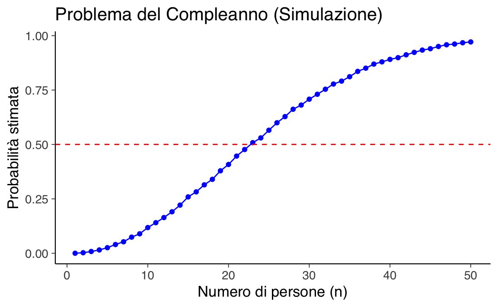

here::here("code", "_common.R") |>
source()
# Load packages
if (!requireNamespace("pacman")) install.packages("pacman")
pacman::p_load(readr, lubridate, reshape2)26 \(\sigma\)-algebra
In questo capitolo imparerai a:
- capire la \(\sigma\)-algebra e gli assiomi di Kolmogorov;
- applicare le regole fondamentali della probabilità;
- utilizzare elementi del calcolo combinatorio.
Prerequisiti
- Leggere il capitolo Probability Models del testo di Chan & Kroese (2025).
- Leggere il capitolo Probability and counting di Introduction to Probability (Blitzstein & Hwang, 2019).
- Leggere il Capitolo 83.
Preparazione del Notebook
26.1 Introduzione
Nel capitolo Capitolo 25 abbiamo visto come si definisce la probabilità su insiemi finiti. Nella pratica, però, lavoriamo spesso con spazi che non sono finiti – ad esempio, l’insieme degli interi o la retta reale – dove il numero di elementi è infinito (in senso numerabile o non numerabile). Estendere la teoria della probabilità a questi spazi più generali richiede strumenti e concetti più sofisticati.
Per gestire in maniera rigorosa questi casi, introduciamo il concetto di \(\sigma\)-algebra. Questo strumento ci permette di decidere quali sottoinsiemi di uno spazio possono essere “misurati”, cioè a quali sottoinsiemi possiamo assegnare una probabilità in modo coerente. La \(\sigma\)-algebra, insieme agli assiomi di Kolmogorov, costituisce la base della moderna teoria della probabilità, garantendo che operazioni come complemento, unione e intersezione (anche in sequenze infinite) siano sempre ben definite.
26.2 \(\sigma\)-Algebra: Una Spiegazione Chiara e Passo Passo
26.2.1 Introduzione
Una \(\sigma\)-algebra è un concetto fondamentale nella teoria della misura e nella probabilità. Per capire di cosa si tratta, immaginiamo di avere uno spazio \(X\), che rappresenta un insieme di tutti i possibili esiti di un esperimento o di un fenomeno. Una \(\sigma\)-algebra è una collezione speciale di sottoinsiemi di \(X\) che ci permette di “misurare” questi esiti in modo coerente e logico. Vediamo ora le tre proprietà che definiscono una \(\sigma\)-algebra: (1) chiusura rispetto al complemento, (2) chiusura rispetto alle unioni numerabili e (3) inclusione dello spazio campionario.
26.3 Definizione
26.3.1 Chiusura rispetto al complemento
Definizione formale:
Se un sottoinsieme \(A\) appartiene a \(\mathcal{F}\), allora anche il suo complemento \(A^c = X \setminus A\) appartiene a \(\mathcal{F}\).Spiegazione intuitiva:
Immagina di avere un evento \(A\), ad esempio “piove”. Se possiamo misurare la probabilità che \(A\) si verifichi, allora dovremmo anche essere in grado di misurare la probabilità che \(A\) non si verifichi, cioè “non piove”. La \(\sigma\)-algebra garantisce che, se \(A\) è misurabile, anche il suo complemento \(A^c\) lo sia.
26.3.2 Chiusura rispetto alle unioni numerabili
Definizione formale:
Se \(\{A_1, A_2, A_3, \dots\}\) è una sequenza (anche infinita) di sottoinsiemi appartenenti a \(\mathcal{F}\), allora anche l’unione \(\bigcup_{i=1}^\infty A_i\) appartiene a \(\mathcal{F}\).Spiegazione intuitiva:
Supponiamo di avere una serie di eventi, come “piove oggi”, “piove domani”, “piove dopodomani”, ecc. Se ciascuno di questi eventi è misurabile, allora dovremmo anche poter misurare l’evento “piove almeno uno di questi giorni”. La \(\sigma\)-algebra assicura che l’unione di questi eventi (anche se sono infiniti) sia ancora misurabile.
26.3.3 Inclusione dello spazio campionario
Definizione formale:
Lo spazio \(X\) stesso appartiene a \(\mathcal{F}\).Spiegazione intuitiva:
Lo spazio \(X\) rappresenta tutti i possibili esiti del nostro esperimento. È logico che questo insieme sia misurabile, perché rappresenta la certezza assoluta (ad esempio, “piove o non piove”). In termini di probabilità, la probabilità che qualcosa accada è sempre 1, quindi \(X\) deve essere incluso nella \(\sigma\)-algebra.
26.3.4 Perché queste proprietà sono importanti?
Queste tre proprietà garantiscono che la \(\sigma\)-algebra sia una struttura solida e coerente per definire eventi misurabili. In particolare:
- Complemento: Ci permette di passare da un evento al suo opposto in modo logico.
- Unioni numerabili: Ci permette di combinare eventi in modo flessibile, anche quando sono infiniti.
- Spazio campionario: Assicura che l’intero contesto sia sempre misurabile.
Queste proprietà sono essenziali per costruire teorie matematiche rigorose, come la teoria della probabilità o l’integrazione di Lebesgue.
Esempio 26.1 Immaginiamo di lanciare un dado. Lo spazio \(X\) è l’insieme dei possibili esiti: \(X = \{1, 2, 3, 4, 5, 6\}\). Una \(\sigma\)-algebra su \(X\) potrebbe includere:
- Tutti i singoli esiti: \(\{1\}, \{2\}, \dots, \{6\}\).
- I complementi: ad esempio, se \(\{1\}\) è incluso, allora anche \(\{2, 3, 4, 5, 6\}\) deve esserlo.
- Le unioni: ad esempio, \(\{1, 2\}\) (l’evento “esce 1 o 2”) deve essere incluso.
In questo modo, la \(\sigma\)-algebra ci permette di assegnare probabilità a tutti gli eventi rilevanti in modo coerente.
In conclusione, una \(\sigma\)-algebra è uno strumento matematico che ci aiuta a definire in modo rigoroso quali eventi possiamo misurare. Le sue tre proprietà fondamentali (chiusura rispetto al complemento, alle unioni numerabili e inclusione dello spazio campionario) garantiscono che la struttura sia logica e completa. Questo concetto è alla base di molte teorie matematiche avanzate, ma la sua intuizione è semplice: ci permette di lavorare con eventi e probabilità in modo coerente e senza contraddizioni.
26.4 Spazio Misurabile
Uno spazio misurabile stabilisce le regole per determinare quali “eventi” possiamo misurare o, più precisamente, a quali eventi possiamo assegnare in modo rigoroso una probabilità. Questa struttura è fondamentale per sviluppare una teoria della probabilità coerente, sia che lo spazio in questione sia finito sia che sia infinito.
26.4.1 Definizione Formale
Uno spazio misurabile è definito come una coppia \((X, \mathcal{F})\), dove:
\(X\):
È un insieme non vuoto, chiamato spazio campionario, che rappresenta tutti i possibili esiti del fenomeno in esame.
Esempio: Se stiamo lanciando un dado, possiamo definire
\[ X = \{1, 2, 3, 4, 5, 6\}. \]\(\mathcal{F}\):
È una \(\sigma\)-algebra su \(X\). Questo significa che \(\mathcal{F}\) è una collezione di sottoinsiemi di \(X\) (chiamati eventi misurabili) che soddisfa le tre proprietà fondamentali che abbiamo descritto in precedenza: chiusura rispetto al complemento, chiusura rispetto alle unioni numerabili, inclusione dello spazio campionario.
26.4.2 Spiegazione Intuitiva
Per capire meglio il concetto, immaginiamo di voler studiare un fenomeno casuale, come il lancio di un dado.
Spazio campionario \(X\):
Questo insieme raccoglie tutti i possibili esiti. Nel nostro esempio, \(X = \{1, 2, 3, 4, 5, 6\}\). È come avere una lista completa di ciò che può accadere.-
\(\sigma\)-algebra \(\mathcal{F}\):
Non tutti i sottoinsiemi di \(X\) sono automaticamente “misurabili” (cioè, a cui possiamo assegnare una probabilità in modo coerente). La \(\sigma\)-algebra è una collezione scelta di sottoinsiemi che rispetta determinate regole.
In altri termini, solo alcuni sottoinsiemi “accettabili”:- Se vogliamo misurare l’evento “esce 1 o 2”, allora \(\{1, 2\}\) deve appartenere a \(\mathcal{F}\).
- Se \(\{1\}\) è misurabile, allora per coerenza anche il complemento, cioè “esce un numero diverso da 1” (cioè \(\{2, 3, 4, 5, 6\}\)), deve appartenere a \(\mathcal{F}\).
- Inoltre, l’intero insieme \(X\) (cioè “esce un numero qualsiasi”) è sempre misurabile.
Eventi misurabili:
Solo gli insiemi inclusi in \(\mathcal{F}\) sono considerati “misurabili”, il che significa che possiamo definire per essi una probabilità in modo rigoroso. Se un sottoinsieme non è in \(\mathcal{F}\), non facciamo affidamento su di esso perché non rispetta le regole necessarie.
26.4.3 Perché è Importante?
Uno spazio misurabile \((X, \mathcal{F})\) è la base per definire una funzione di probabilità \(P\), che assegna a ogni evento misurabile un valore tra 0 e 1. Senza la struttura fornita dalla \(\sigma\)-algebra, non avremmo un metodo rigoroso per dire quali eventi considerare e come combinarli in modo che le operazioni (come prendere complementi o unire eventi) siano sempre ben definite.
Esempio 26.2 Consideriamo di nuovo il lancio di un dado.
- Lo spazio campionario è \(X = \{1, 2, 3, 4, 5, 6\}\).
- Una possibile \(\sigma\)-algebra \(\mathcal{F}\) potrebbe includere:
- Gli eventi elementari: \(\{1\}, \{2\}, \ldots, \{6\}\).
- Eventi composti: ad esempio, \(\{1, 2\}\) (l’evento “esce 1 o 2”), \(\{3, 4, 5\}\), ecc.
- L’insieme intero \(X\) e l’insieme vuoto \(\varnothing\).
In questo modo, possiamo assegnare ad esempio:
- \(P(\{1\}) = \frac{1}{6}\) (la probabilità che esca 1),
- \(P(\{1, 2\}) = \frac{1}{3}\) (la probabilità che esca 1 o 2).
In conclusione, uno spazio misurabile \((X, \mathcal{F})\) è una struttura matematica fondamentale che ci consente di definire in modo rigoroso quali eventi possiamo misurare e, successivamente, a quali assegnare una probabilità:
-
\(X\) è lo spazio dei possibili esiti, come nel lancio del dado;
- \(\mathcal{F}\) è la collezione di sottoinsiemi (gli eventi misurabili) che rispetta regole specifiche per garantire coerenza (inclusione del complementare, unioni numerabili e dell’intero spazio).
Questa struttura ci permette di sviluppare la teoria della probabilità in maniera rigorosa, garantendo che operazioni insiemistiche siano sempre ben definite e che ogni evento a cui assegniamo una probabilità sia stato scelto seguendo criteri logici e coerenti.
26.5 Gli Assiomi di Kolmogorov
Una volta definito lo spazio misurabile \((X, \mathcal{F})\), la probabilità viene formalmente definita come una funzione \[ P: \mathcal{F} \to [0, 1] \] che assegna a ogni evento misurabile un valore compreso tra 0 e 1, in modo da rappresentare il grado di fiducia o certezza soggettiva che l’evento si verifichi.
Come già introdotto in precedenza, gli assiomi di Kolmogorov sono i seguenti:
Non negatività:
Per ogni evento \(A \in \mathcal{F}\), \[ P(A) \ge 0. \] Intuitivamente, questo significa che non possiamo avere “certezza negativa”: la probabilità è sempre una quantità positiva o nulla.Normalizzazione:
La probabilità dell’intero spazio campionario è 1: \[ P(X) = 1. \] Questo riflette l’idea che siamo completamente certi che qualche evento si verificherà (cioè, la somma totale della nostra certezza è 1).Additività numerabile:
Se \(\{A_1, A_2, A_3, \dots\} \subset \mathcal{F}\) è una sequenza di eventi mutuamente esclusivi (cioè, \(A_i \cap A_j = \varnothing\) per \(i \neq j\)), allora \[ P\left(\bigcup_{i=1}^\infty A_i\right) = \sum_{i=1}^\infty P(A_i). \] Questo assioma garantisce che se possiamo “suddividere” un evento in sottoeventi che non si sovrappongono, la probabilità dell’evento complessivo è data dalla somma delle probabilità dei singoli sottoeventi.
- Questi assiomi sono le regole che ci assicurano una distribuzione coerente della nostra certezza tra i vari eventi. In pratica, se immaginiamo la probabilità come una “torta” che rappresenta il nostro grado di certezza totale (pari a 1), gli assiomi ci dicono che ogni fetta della torta (cioè, ogni evento) deve essere positiva e la somma delle fette deve essere pari alla torta intera.
- L’additività numerabile è particolarmente utile quando si affrontano problemi complessi che possono essere suddivisi in tanti sotto-eventi non sovrapposti.
26.6 Connessione tra \(\sigma\)-Algebra e Probabilità
Gli assiomi di Kolmogorov sono formulati utilizzando la \(\sigma\)-algebra \(\mathcal{F}\) perché essa delimita l’insieme dei sottoinsiemi (o eventi) per i quali la probabilità è definita. In altre parole, la \(\sigma\)-algebra ci dice quali eventi sono “ammissibili” per la nostra analisi probabilistica. Solo per questi eventi ha senso applicare gli assiomi di Kolmogorov.
Esempio 26.3 Consideriamo lo spazio campionario: \[ \Omega = \{1, 2, 3\}. \]
Vogliamo costruire una \(\sigma\)-algebra \(\mathcal{F}\) su \(\Omega\) che includa tutti i possibili eventi misurabili. Per farlo, dobbiamo assicurarci che \(\mathcal{F}\) soddisfi le tre proprietà fondamentali di una \(\sigma\)-algebra:
- Inclusione di \(\varnothing\) e \(\Omega\).
- Chiusura rispetto al complemento.
- Chiusura rispetto alle unioni numerabili.
Costruzione della \(\sigma\)-algebra. Per includere tutti i possibili eventi, partiamo da tutti i sottoinsiemi di \(\Omega\) (cioè l’insieme delle parti di \(\Omega\)) e verifichiamo che formino una \(\sigma\)-algebra. L’insieme delle parti di \(\Omega\) è: \[ \mathcal{F} = \big\{\varnothing, \{1\}, \{2\}, \{3\}, \{1, 2\}, \{1, 3\}, \{2, 3\}, \{1, 2, 3\}\big\}. \]
Questa è la \(\sigma\)-algebra più grande possibile su \(\Omega\).
Verifica delle proprietà.
-
Inclusione di \(\varnothing\) e \(\Omega\):
- \(\varnothing \in \mathcal{F}\).
- \(\Omega = \{1, 2, 3\} \in \mathcal{F}\).
-
Chiusura rispetto al complemento:
- Il complemento di \(\{1\}\) è \(\{2, 3\}\), e \(\{2, 3\} \in \mathcal{F}\).
- Il complemento di \(\{2\}\) è \(\{1, 3\}\), e \(\{1, 3\} \in \mathcal{F}\).
- Il complemento di \(\{3\}\) è \(\{1, 2\}\), e \(\{1, 2\} \in \mathcal{F}\).
- Il complemento di \(\{1, 2\}\) è \(\{3\}\), e \(\{3\} \in \mathcal{F}\).
- Il complemento di \(\{1, 3\}\) è \(\{2\}\), e \(\{2\} \in \mathcal{F}\).
- Il complemento di \(\{2, 3\}\) è \(\{1\}\), e \(\{1\} \in \mathcal{F}\).
-
Chiusura rispetto alle unioni numerabili:
- L’unione di \(\{1\}\) e \(\{2\}\) è \(\{1, 2\}\), e \(\{1, 2\} \in \mathcal{F}\).
- L’unione di \(\{1\}\) e \(\{3\}\) è \(\{1, 3\}\), e \(\{1, 3\} \in \mathcal{F}\).
- L’unione di \(\{2\}\) e \(\{3\}\) è \(\{2, 3\}\), e \(\{2, 3\} \in \mathcal{F}\).
- L’unione di \(\{1, 2\}\) e \(\{3\}\) è \(\{1, 2, 3\}\), e \(\{1, 2, 3\} \in \mathcal{F}\).
- Analogamente, tutte le altre unioni (finite o numerabili) di elementi di \(\mathcal{F}\) restano in \(\mathcal{F}\).
Interpretazione degli eventi misurabili. In questa \(\sigma\)-algebra, tutti i possibili sottoinsiemi di \(\Omega\) sono misurabili. Questo significa che possiamo assegnare una probabilità a qualsiasi evento, anche quelli più “complessi”. Ecco alcuni esempi:
-
Eventi semplici:
- \(\{1\}\): “esce 1”.
- \(\{2\}\): “esce 2”.
- \(\{3\}\): “esce 3”.
-
Eventi composti:
- \(\{1, 2\}\): “esce 1 o 2”.
- \(\{1, 3\}\): “esce 1 o 3”.
- \(\{2, 3\}\): “esce 2 o 3”.
-
Eventi certi e impossibili:
- \(\{1, 2, 3\}\): “esce un numero qualsiasi” (evento certo).
- \(\varnothing\): “non esce nulla” (evento impossibile).
26.7 Probabilità
Una volta stabilita la struttura (spazio \(X\) e \(\sigma\)-algebra \(\mathcal{F}\)), definiamo la probabilità come una funzione \[ P: \mathcal{F} \to [0, 1] \] che quantifica il grado di fiducia nel verificarsi di ogni evento \(A \in \mathcal{F}\).
26.7.1 Interpretazione
- \(P(A) = 0\): l’evento \(A\) è impossibile (non siamo per nulla certi che accada).
- \(P(A) = 1\): l’evento \(A\) è certo (abbiamo la massima certezza che accada).
- Complemento: la probabilità che un evento \(A\) non si verifichi è data da \[ P(A^c) = 1 - P(A). \] Questo rispecchia il fatto che l’intera “torta” della certezza (pari a 1) si divide tra l’evento e il suo complemento.
Esempio 26.4 Consideriamo nuovamente lo spazio campionario \(\Omega = \{1, 2, 3\}\) dell’esempio precedente. Una volta definita la \(\sigma\)-algebra come abbiamo fatto sopra, possiamo assegnare una probabilità a ciascun evento. Ad esempio, se il dado è equilibrato, possiamo definire:
- \(P(\{1\}) = P(\{2\}) = P(\{3\}) = \frac{1}{3}\).
- \(P(\{1, 2\}) = P(\{1, 3\}) = P(\{2, 3\}) = \frac{2}{3}\).
- \(P(\{1, 2, 3\}) = 1\) (evento certo).
- \(P(\varnothing) = 0\) (evento impossibile).
In conclusione, la \(\sigma\)-algebra \(\mathcal{F}\) costruita su \(\Omega = \{1, 2, 3\}\) include tutti i possibili sottoinsiemi di \(\Omega\). Questo garantisce che qualsiasi evento, semplice o composto, sia misurabile e possa essere associato a una probabilità in modo coerente.
26.7.2 Proprietà Derivate
Dai suddetti assiomi, seguono altre proprietà utili, per esempio:
- Probabilità dello spazio vuoto: \(P(\varnothing) = 0\).
- Monotonia: se \(A \subset B\) allora \(P(A) \le P(B)\).
- Additività per eventi incompatibili: se \(A\) e \(B\) sono eventi che non si sovrappongono, vale: \[ P(A \cup B) = P(A) + P(B). \]
26.8 Considerazioni
La struttura formale della probabilità, basata sulla definizione di \(\sigma\)-algebra e sugli assiomi di Kolmogorov, garantisce che la probabilità sia definita in modo rigoroso, anche quando lavoriamo con spazi infiniti o particolarmente complessi. Questa formalizzazione matematica è essenziale per evitare ambiguità e contraddizioni, permettendoci di trattare problemi avanzati in modo coerente.
26.8.1 Interpretazione Intuitiva
In termini intuitivi, possiamo pensare alla probabilità come a una misura della nostra certezza soggettiva riguardo al verificarsi di un evento. Questa certezza è distribuita tra tutti i possibili eventi, con due vincoli fondamentali:
Certezza totale: La somma di tutta la certezza deve essere pari a 1. Questo significa che siamo completamente sicuri che qualcosa accadrà (ad esempio, lanciando un dado, uscirà sicuramente un numero tra 1 e 6).
Certezza parziale: La certezza può essere suddivisa tra i vari eventi in modo proporzionale. Ad esempio, se un dado è equilibrato, assegniamo una certezza di \(\frac{1}{6}\) a ciascun numero.
26.8.2 Ruolo degli Assiomi di Kolmogorov
Gli assiomi di Kolmogorov forniscono le regole fondamentali per assegnare probabilità in modo coerente:
Non negatività: La probabilità di un evento non può essere negativa. Questo riflette l’idea che la certezza non può essere “in negativo”.
Certezza totale: La probabilità dell’intero spazio campionario è 1. Questo corrisponde alla nostra certezza assoluta che almeno uno degli eventi possibili si verificherà.
Additività: Se consideriamo eventi che non si sovrappongono (detti disgiunti), la probabilità della loro unione è la somma delle probabilità dei singoli eventi. Questo garantisce che la nostra certezza sia distribuita in modo logico e coerente.
Queste regole assicurano che la probabilità sia ben definita e che possiamo combinare eventi in modo sensato, anche in contesti complessi.
26.8.3 Importanza della \(\sigma\)-Algebra
La \(\sigma\)-algebra è lo strumento che ci permette di definire quali eventi sono misurabili. Senza di essa, non avremmo un modo rigoroso per stabilire a quali eventi possiamo assegnare una probabilità. In particolare:
- La \(\sigma\)-algebra garantisce che, se un evento è misurabile, anche il suo complemento (cioè l’evento opposto) lo sia.
- Permette di combinare eventi in modo flessibile, anche quando sono infiniti, mantenendo la coerenza della struttura.
26.8.4 Applicazioni Pratiche
Questi concetti non sono solo astratti, ma hanno applicazioni concrete in molti campi:
- Probabilità discreta: Quando lavoriamo con spazi finiti (come il lancio di un dado), la \(\sigma\)-algebra include tutti i possibili sottoinsiemi dello spazio campionario.
- Probabilità continua: In spazi infiniti (come la misurazione di una quantità fisica), la \(\sigma\)-algebra ci permette di definire eventi complessi, come intervalli di numeri reali.
- Teoria della misura: La probabilità è un caso particolare di una misura, e la \(\sigma\)-algebra è essenziale per definire integrali e altre operazioni avanzate.
In conclusione, la formalizzazione della probabilità attraverso la \(\sigma\)-algebra e gli assiomi di Kolmogorov non è solo una questione di rigore matematico, ma è fondamentale per applicare la teoria della probabilità in contesti reali e complessi. Questa struttura ci permette di distribuire la nostra certezza in modo coerente, garantendo che le nostre conclusioni siano logiche e ben fondate, sia in situazioni semplici che in quelle più avanzate.
26.9 Regola della Somma
La regola della somma permette di calcolare la probabilità dell’unione di due eventi \(A\) e \(B\), cioè la probabilità che si verifichi \(A\) oppure \(B\). La formula dipende dal fatto che i due eventi siano incompatibili (mutuamente esclusivi) o meno.
26.9.1 Eventi Mutuamente Esclusivi
Se gli eventi \(A\) e \(B\) non possono verificarsi contemporaneamente (cioè, \(A \cap B = \varnothing\)), allora: \[ P(A \cup B) = P(A) + P(B). \]
Esempio 26.5 Se \(B = A^c\), poiché \(A\) e \(A^c\) formano una partizione dello spazio, vale: \[ P(A) + P(A^c) = 1. \]
26.9.2 Eventi Non Mutuamente Esclusivi
Se gli eventi \(A\) e \(B\) possono verificarsi insieme, allora occorre evitare di contare due volte la parte in cui si sovrappongono. In questo caso: \[ P(A \cup B) = P(A) + P(B) - P(A \cap B). \]
Il termine \(P(A \cap B)\) sottrae la probabilità che entrambi gli eventi si verifichino, che altrimenti verrebbe conteggiata due volte.
26.10 Legge della Probabilità Totale
La legge della probabilità totale consente di calcolare la probabilità di un evento \(A\) suddividendo lo spazio campionario in sottoinsiemi mutuamente esclusivi e completi, detti partizioni. Questo metodo è utile per decomporre un problema complesso in elementi più semplici.
26.10.1 Caso con Due Partizioni
Se \(B\) e \(B^c\) formano una partizione dello spazio (cioè sono disgiunti e la loro unione è l’intero spazio), allora:
\[ P(A) = P(A \cap B) + P(A \cap B^c). \]
In altre parole, la probabilità di \(A\) è data dalla somma delle probabilità delle sue intersezioni con \(B\) e con il complemento di \(B\).
26.10.2 Caso con Più Partizioni
Se lo spazio è diviso in \(n\) sottoinsiemi \(B_1, B_2, \dots, B_n\), mutuamente esclusivi e tali che \[ \bigcup_{i=1}^n B_i = \Omega, \] allora: \[ P(A) = \sum_{i=1}^n P(A \cap B_i). \]
Questa legge è utile nei casi in cui un problema complesso può essere scomposto in diversi scenari o categorie (\(B_1, B_2, \dots, B_n\)). In pratica, permette di calcolare \(P(A)\) sommando le probabilità di \(A\) all’interno di ciascuna categoria, tenendo conto delle rispettive probabilità.
Esempio 26.6 Immagina che una scuola abbia due corsi, \(B\) e \(B^c\), e che un certo evento \(A\) (ad esempio, un esame superato) possa avvenire sia tra gli studenti del corso \(B\) che tra quelli di \(B^c\). Per calcolare la probabilità totale che \(A\) si verifichi, possiamo considerare separatamente i due gruppi:
\[ P(A) = P(A \cap B) + P(A \cap B^c). \]
In generale, la legge della probabilità totale aiuta a gestire problemi complessi e ad assicurare che ogni contributo venga considerato una sola volta, evitando duplicazioni o omissioni.
26.11 Probabilità, Calcolo Combinatorio e Simulazioni
Molti problemi di probabilità scolastici si basano sul calcolo combinatorio per determinare la probabilità di un evento. La struttura generale di questi problemi consiste nel:
- Definire gli eventi di successo: identificare tutte le configurazioni compatibili con l’evento di interesse.
- Contare le possibilità: calcolare il numero di eventi di successo e rapportarlo al numero totale di eventi nello spazio campionario.
Esempio 26.7 Supponiamo di avere una scatola con 10 palline numerate da 1 a 10 e di voler calcolare la probabilità di estrarre una pallina con un numero pari:
- Eventi di successo: {2, 4, 6, 8, 10} (5 casi).
- Eventi totali: {1, 2, 3, 4, 5, 6, 7, 8, 9, 10} (10 casi).
La probabilità è quindi:
\[ P(\text{numero pari}) = \frac{\text{numero di eventi di successo}}{\text{numero totale di eventi}} = \frac{5}{10} = 0.5. \]
Per problemi più complessi, come il calcolo della probabilità di ottenere una determinata combinazione di carte o di formare gruppi specifici da una popolazione, utilizziamo tecniche combinatorie più avanzate, come permutazioni e combinazioni.
26.12 Simulazioni Monte Carlo
Uno degli aspetti più impegnativi della probabilità è che molti problemi non si prestano a soluzioni immediate o intuitive. Per affrontarli, si possono adottare due approcci principali. Il primo consiste nell’applicare i teoremi della teoria della probabilità, un metodo rigoroso ma spesso controintuitivo. Il secondo approccio è quello della simulazione Monte Carlo, che permette di ottenere una soluzione approssimata, ma molto vicina al valore reale, seguendo una procedura più accessibile e intuitiva. Questo metodo prende il nome dal famoso Casinò di Monte Carlo a Monaco, anche se può essere semplicemente definito come “metodo di simulazione.”
La simulazione Monte Carlo appartiene a una classe generale di metodi stocastici, che si contrappongono ai metodi deterministici. Questi metodi consentono di risolvere approssimativamente problemi analitici attraverso la generazione casuale delle quantità di interesse. Tra le tecniche comunemente utilizzate troviamo il campionamento con reinserimento, in cui la stessa unità può essere selezionata più volte, e il campionamento senza reinserimento, dove ogni unità può essere selezionata una sola volta. Questi strumenti rappresentano un mezzo potente e pratico per affrontare problemi complessi.
26.12.1 Il Problema dei Complenni
Un esempio classico di applicazione del metodo Monte Carlo è il calcolo delle probabilità relative a vari eventi definiti attraverso il modello dell’urna. Tra questi, abbiamo il celebre problema dei compleanni.
Il problema dei compleanni esplora la probabilità che, in un gruppo di \(n\) persone, almeno due persone condividano la stessa data di nascita. Supponendo che i compleanni siano distribuiti uniformemente su 365 giorni (ignorando anni bisestili), il problema sorprende molte persone per il fatto che già con 23 persone la probabilità di una coincidenza è superiore al 50%.
26.12.1.1 Soluzione analitica
- Probabilità complementari
Il problema può essere visto in due modi complementari:
- Caso 1: Tutti i compleanni sono diversi (cioè nessuna persona condivide il compleanno con un’altra).
- Caso 2: Almeno due persone condividono lo stesso compleanno.
Poiché questi due casi sono mutuamente esclusivi e coprono tutte le possibilità, la somma delle loro probabilità deve essere 1:
\[ P(\text{almeno un compleanno in comune}) = 1 - P(\text{nessun compleanno in comune}). \]
Quindi, per calcolare la probabilità che almeno due persone abbiano lo stesso compleanno, calcoliamo prima la probabilità del caso opposto (nessun compleanno in comune) e poi sottraiamo questo valore da 1.
- Probabilità che tutti i compleanni siano diversi
Per calcolare \(P(\text{nessun compleanno in comune})\), seguiamo questo ragionamento:
- La prima persona può scegliere liberamente un giorno del calendario: ci sono 365 possibilità.
- La seconda persona deve avere un compleanno diverso dalla prima: ci sono 364 giorni disponibili.
- La terza persona deve avere un compleanno diverso dai primi due: ci sono 363 giorni disponibili.
Questo continua fino alla \(n\)-esima persona, che ha \(365 - n + 1\) giorni disponibili.
La probabilità che tutti i compleanni siano diversi si ottiene moltiplicando queste probabilità individuali, e poi normalizzando rispetto a tutte le possibili scelte di compleanno (\(365^n\)):
\[ P(\text{nessun compleanno in comune}) = \frac{365}{365} \cdot \frac{364}{365} \cdot \frac{363}{365} \cdot \ldots \cdot \frac{365-n+1}{365}. \]
Questo prodotto può essere scritto in forma compatta usando il fattoriale:
\[ P(\text{nessun compleanno in comune}) = \frac{365!}{(365-n)! \cdot 365^n}. \]
- Probabilità di almeno un compleanno in comune
Ora possiamo calcolare la probabilità che almeno due persone abbiano lo stesso compleanno come il complemento:
\[ P(\text{almeno un compleanno in comune}) = 1 - P(\text{nessun compleanno in comune}). \]
26.12.1.2 Soluzione con simulazione in R
Per risolvere il problema tramite simulazione, possiamo generare gruppi casuali di \(n\) persone, assegnando loro un compleanno casuale tra 1 e 365. Per ogni gruppo, verifichiamo se almeno due persone condividono lo stesso compleanno.
Ecco il codice R:
# Numero di simulazioni
num_simulazioni <- 10000
# Funzione per simulare il problema del compleanno
simula_compleanno <- function(n) {
# Conta il numero di successi (almeno un compleanno in comune)
successi <- 0
# Loop per il numero di simulazioni
for (i in 1:num_simulazioni) {
# Genera n compleanni casuali
compleanni <- sample(1:365, n, replace = TRUE)
# Verifica se ci sono duplicati
if (any(duplicated(compleanni))) {
successi <- successi + 1
}
}
# Calcola la probabilità stimata
return(successi / num_simulazioni)
}Proviamo con diversi valori di n.
set.seed(123) # Fissiamo il seme per la riproducibilità
risultati <- sapply(1:50, simula_compleanno)
# Creiamo un data frame con i risultati
df <- data.frame(
n = 1:50,
prob = risultati
)
# Creiamo il grafico
ggplot(df, aes(x = n, y = prob)) +
geom_line(color = "blue") +
geom_point(color = "blue") +
geom_hline(yintercept = 0.5, color = "red", linetype = "dashed") +
labs(
x = "Numero di persone (n)",
y = "Probabilità stimata",
title = "Problema del Compleanno (Simulazione)"
) 
- Simulazioni: Per ogni gruppo di \(n\), si eseguono 10.000 simulazioni, in cui si generano \(n\) compleanni casuali tra 1 e 365.
- Duplicati: La funzione duplicated() verifica se ci sono compleanni ripetuti.
- Calcolo della probabilità: La proporzione di simulazioni in cui si verifica almeno un compleanno condiviso rappresenta la probabilità stimata.
- Visualizzazione: Si tracciano le probabilità per diversi valori di \(n\), evidenziando il punto in cui la probabilità supera il 50%.
26.12.1.3 Risultati attesi
- Con circa 23 persone, la probabilità stimata sarà superiore a 0.5.
- Il grafico mostra una curva crescente con un rapido aumento della probabilità per \(n\) piccoli e un asintoto vicino a 1 per \(n\) grandi.
Questo approccio permette di comprendere intuitivamente il problema e di verificare i risultati teorici con la simulazione.
26.12.1.4 Assunzioni
Il problema dei compleanni evidenzia non solo l’efficacia dell’approccio simulativo nel semplificare la soluzione rispetto all’analisi formale, ma anche l’importanza delle assunzioni che entrambi i metodi condividono. In questo caso, l’assunzione è che la probabilità di nascita sia uniformemente distribuita nei 365 giorni dell’anno — un’ipotesi semplificativa che non rispecchia la realtà.
Questo esempio sottolinea un principio fondamentale dei modelli probabilistici (e scientifici in generale): ogni modello si basa su un insieme di ipotesi che ne delimitano la validità e l’applicabilità. Valutare criticamente la plausibilità di tali ipotesi è dunque essenziale per garantire che il modello fornisca una rappresentazione coerente e utile del fenomeno in studio.
26.13 Riflessioni Conclusive
Dalle definizioni rigorose (come la \(\sigma\)-algebra e gli assiomi di Kolmogorov) alle tecniche pratiche (calcolo combinatorio e simulazioni Monte Carlo), la teoria della probabilità ci fornisce gli strumenti per analizzare e gestire l’incertezza.
- La struttura formale (spazi misurabili e \(\sigma\)-algebra) garantisce coerenza e rigore nella definizione dei modelli probabilistici.
- Le regole, come la somma e la legge della probabilità totale, permettono di scomporre e risolvere problemi complessi.
- Le simulazioni offrono metodi intuitivi per verificare e approfondire i risultati teorici.
Ricordare che ogni modello probabilistico si basa su ipotesi specifiche è fondamentale: la loro adeguatezza e la capacità del modello di rappresentare la realtà devono essere sempre valutate criticamente. Questi strumenti non solo permettono di risolvere problemi matematici, ma aiutano anche a prendere decisioni informate in situazioni di incertezza.
Informazioni sull’Ambiente di Sviluppo
sessionInfo()
#> R version 4.4.2 (2024-10-31)
#> Platform: aarch64-apple-darwin20
#> Running under: macOS Sequoia 15.3
#>
#> Matrix products: default
#> BLAS: /Library/Frameworks/R.framework/Versions/4.4-arm64/Resources/lib/libRblas.0.dylib
#> LAPACK: /Library/Frameworks/R.framework/Versions/4.4-arm64/Resources/lib/libRlapack.dylib; LAPACK version 3.12.0
#>
#> locale:
#> [1] C/UTF-8/C/C/C/C
#>
#> time zone: Europe/Rome
#> tzcode source: internal
#>
#> attached base packages:
#> [1] stats graphics grDevices utils datasets methods base
#>
#> other attached packages:
#> [1] reshape2_1.4.4 thematic_0.1.6 MetBrewer_0.2.0 ggokabeito_0.1.0
#> [5] see_0.9.0 gridExtra_2.3 patchwork_1.3.0 bayesplot_1.11.1
#> [9] psych_2.4.12 scales_1.3.0 markdown_1.13 knitr_1.49
#> [13] lubridate_1.9.4 forcats_1.0.0 stringr_1.5.1 dplyr_1.1.4
#> [17] purrr_1.0.2 readr_2.1.5 tidyr_1.3.1 tibble_3.2.1
#> [21] ggplot2_3.5.1 tidyverse_2.0.0 rio_1.2.3 here_1.0.1
#>
#> loaded via a namespace (and not attached):
#> [1] generics_0.1.3 stringi_1.8.4 lattice_0.22-6 hms_1.1.3
#> [5] digest_0.6.37 magrittr_2.0.3 evaluate_1.0.3 grid_4.4.2
#> [9] timechange_0.3.0 fastmap_1.2.0 plyr_1.8.9 rprojroot_2.0.4
#> [13] jsonlite_1.8.9 mnormt_2.1.1 cli_3.6.3 rlang_1.1.5
#> [17] munsell_0.5.1 withr_3.0.2 yaml_2.3.10 tools_4.4.2
#> [21] parallel_4.4.2 tzdb_0.4.0 colorspace_2.1-1 pacman_0.5.1
#> [25] vctrs_0.6.5 R6_2.5.1 lifecycle_1.0.4 htmlwidgets_1.6.4
#> [29] pkgconfig_2.0.3 pillar_1.10.1 gtable_0.3.6 Rcpp_1.0.14
#> [33] glue_1.8.0 xfun_0.50 tidyselect_1.2.1 rstudioapi_0.17.1
#> [37] farver_2.1.2 htmltools_0.5.8.1 nlme_3.1-167 labeling_0.4.3
#> [41] rmarkdown_2.29 compiler_4.4.2Bibliografia
Blitzstein, J. K., & Hwang, J. (2019). Introduction to probability. CRC Press.
Chan, J. C. C., & Kroese, D. P. (2025). Statistical Modeling and Computation (2ª ed.). Springer.